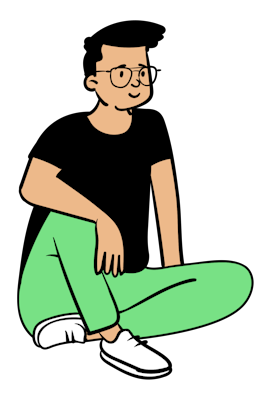

“I left school thinking marks were everything I’d need.”
Two years of cramming. Optimizing for grades. Doing what was expected. The system rewarded it, so I did it. Then the exams ended — and for the first time, nobody was telling me what to learn next.
That gap is where this story starts.
Python came first. Calculators, small scripts, the satisfaction of seeing what was underneath instead of just using the surface. Then DBMS. Then data structures. Each one opened up another thing I didn’t know yet.
Then I found Attention Is All You Need.
I didn’t fully understand it the first time. I read it again. The math confused me — how do matrices, the same ones from my textbook, produce something that feels like human thought? That question didn’t have a clean answer. It still doesn’t, really.
But it changed what I did with my evenings.
My first real project was a license plate detector built with OpenCV. Not because someone assigned it — because I wanted to see if I could. It wasn’t polished. The edge cases were everywhere. But finishing it felt different from a good grade on an exam.
Something had actually worked, in the world, because of decisions I made.
“That feeling became the thing I started chasing.”
Around this time, my mom started bringing me problems. Not academic ones. Real ones.
Could I build something that automates report card creation? Something a teacher could use with a click, without needing to understand how it worked?
Then: the CBSE gazette analyzer. Every exam season, the board releases results as raw text files — inconsistent, messy, full of subject-code variations that change year to year. The tool parsed all of it, ran the analytics, and produced clean Excel and PDF reports automatically.
What looked simple from the outside took real work to get right. When teachers at two schools used it during their Class X final exams — analyzing results for 600 students combined — and reached out to say it saved them hours, that landed differently than any mark ever had.
From there the projects kept coming: computer vision, full-stack systems, ML pipelines, frontend design, small physics simulations. Each one left me a question the next one tried to answer.
Agents were the question that stuck longest.
At first they seemed like sorcery. Systems that figure things out on their own. After building five or six, the magic wore off and I could see the engineering underneath. Messy, and mostly unsolved.
The frustration of watching agents break every time a new tool was added became the motivation for Native. An agent whose every run shows its working: what it planned, which tool it called, what came back. No hidden loops. No guessing what the agent decided to do.
Four months. Four major versions. Voice mode, long-term memory, a fabrication guard that prevents the system from making things up. Fifteen tools. And an architecture that’s still evolving.
Native came out of the next question: what happens when the agent has to belong to the person running it? So the documents get embedded locally and never leave the machine, the code runs in a container with the network switched off at the kernel, and every model role is a chain rather than a choice — free tiers first, a model on your own hardware at the end, so a rate limit at two in the afternoon slows the run down instead of stopping it. Twenty-two tools, and every one of them shows its working on screen.
This year the work started reaching past my own repositories. A healthcare certifier in Germany needed applications checked: does the certificate someone uploaded actually say what they typed into the form? I’m building the AI that reads them.
The bugs that matter there are quiet ones. A perfectly valid certificate, scanned with a phone app, was being read as expired — a good application would have been sent back. Another rule threw out a whole application over one missing file, when asking for the file was the obvious thing to do.
So now every document gets a second, independent reading, and anything the two readings disagree on goes to a person. There’s a 33-case test set behind it, tampered files included.
Around the same time I started sending fixes upstream — to IPython, git-cola, icalendar and scikit-learn. Two have been merged so far; the other two are in review.

“At some point the belief that marks
were everything just stopped holding.”
Not because grades stopped mattering. But because something replaced them — the specific satisfaction of building something that works for someone who needed it.
That’s what drives the next project. And the one after that.